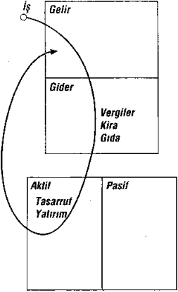

konuştuklarını bilmeyen o kadar çok kimse var ki. Para endüstrisindeki kişilerin pek çoğu ikinci el araba satıcıları misali satış yaparlar.
Bir konuda cahil olduğunuzu biliyorsanız, o alanda bir uzman ya da konu hakkında yazılmış bir kitap bularak hemen kendinizi eğitmeye başlayın.
İşe Koyulmak
Keşke size servet edinmenin benim için kolay olduğunu söyleyebilseydim; ama kolay olmadı.
Bu doğrultuda “Nasıl başlasam?” sorusuna karşılık
251
downloaded from KitabYurdu.org
benim önerim, günden güne düşünce sürecinden geçmek. Eşsiz pazarlıklar bulmak gerçekten kolay. Sizi temin ederim. Bisiklete binmekten farksız. Biraz sağı solu kolaçan ettikten sonra çantada keldik bilin. Ama para söz konusu olduğunda kolaçan etme kararlılığı sizin bileceğiniz iş. Ömür boyu insanın karşısına bir kez çıkan milyon dolar - lık anlaşmalar bulmak finansal deha gerektirir. Gelgeldim, finansal dehamız uykudadır, onu çağırmamızı bekler. Yetiştirildiğimiz kültürde para sevgisinin şeytanca olduğu bize öğretildiği için geri plana itilmiştir. Para kazanmak için çalışalım diye, bizi meslek öğrenmeye teşvik etmiştir, ne var ki parayı kendimiz için nasıl çalıştıracağımızı öğ retmeyi
başaramamıştır. Maddi geleceğimiz için
kaygılanmamamızı, çalıştığımız şirketin ya da devletin çalışma hayatımız sona erdikten sonra bize bakacağını öğretmiştir. Ancak bunun bedelini er ya da geç ödeyecek olanlar, aynı eğitim anlayışıyla yetiştirilen ço cuklarımızdır. Verilen mesaj hâlâ aynıdır, çok çalışın, para kazanın ve harcayın, eğer paranız yeterli gelmezse borç alın.
Ne yazık ki, Batı dünyasının yüzde 90’ı bu görüşü benimsemektedir. Nedeni basit; iş bulup para kazanmak için çalışmak daha kolay. Bu sürüye katıklılardan değilseniz, finansal dehanızı uyandırmak için size on adım öneririm. Kendi attığım adımlar bunlar. Birkaçını izleseniz bile çok
252
downloaded from KitabYurdu.org
iyi. Beğenmezseniz, kendi yolunuzu çizersiniz. Finan sal dehanız kendi yönünüzü bulacak kadar uy anıktır. Peru’dayken kırk beş yaşlarında bir altın madencisiyle
birlikteydim, ona altın madeni bulma konusunda kendine nasıl bu kadar güvendiğini sordum. “Altın her yerde,” oldu yanıtı. “Kimileri onu görmeyi bilmez.”
Doğru söylüyordu. Emlak işinde de farklı değildi; kimileri piyasaya çıkıp eli boş dönerken, siz günde dört ya da beş anlaşma olasılığıyla dönerdiniz. Hem de aynı yörede. Çünkü o kişiler finansal dehalarını geliştirmeye zaman ayırm amıştır.
Tanrı vergisi gücünüzü geliştirmeniz için izlemenizi önerdiğim on adım var. Sadece sizin denetiminizde olan güçlerden söz ediyorum.
1. GERÇEĞİN ÖTESİNDE BİR SEBEP GE REK: Ruh gücü. Zengin olmak ve maddi bağımsızlık ister misiniz diye sorduğunuzda neredeyse herkesten “Evet” yanıtını alırsınız. Derken gerçek kendini gösterir. Tırmanacak pek çok tepelerle dolu uzun bir yol kat etmek gerekmektedir. Para için çalışmak ve artanı bir borsa simsarının ellerine teslim etmek daha kolaydır. Amerikan Olimpiyat Yüzme Takımı’na katılmayı hayal eden genç bir kızla tanışmıştım. Okula gitmeden önce her sabah saat dörtte kalkıp yüzme antrenmanı yapması
253
downloaded from KitabYurdu.org
gerekiyordu. Cumartesi akşamlarını arkadaşlarıyla
eğlenmeye ayıramıyordu. Herkes gibi çok çalışması ve iyi notlar alması gerekiyordu.
Böyle insanüstü bir hırs ve fedakârlığın nereden kaynak - landığını sorduğumda, “Hem kendim hem de sevdiklerim için yapıyorum bunu,” yanıtını aldım. “İçimdeki sevgi sayesinde engelleri aşmak ve fedakârlık etmek bana ağır gelmiyor,” dedi.
Bir sebep ya da bir amaç ‘istenenlerin’ ve ‘istenmeyenle - rin’ bileşimidir. Zengin olmayı isteme gerekçemi soranlara, derin coşkulu ‘isteklerim’ ve ‘istemediklerindin kombinasyonu derim.
Birkaçını sayayım. Öncelikle ‘istenmeyenler’ çünkü ‘is - tenenler’ onlardan doğar. Hayatım boyunca çalışmak is - temiyorum. Annemle babamın bana aşıladıkları iş güven - cesini ve banliyöde bir ev istemiyorum. Başkası için çalışan biri olmak istemiyorum. Babamın oynadığım maçları işinden dolayı kaçırmasından nefret ederdim. Babamın yaşamı boyunca çok çalışmasından nefret ettim, hele öldüğünde uğruna çalıştığı şeylere devletin el koyması bardağı taşıran son damlaydı. Öldüğünde, elde etmek için çok çalıştığı hiçbir şeyi miras bırakamadı. Zenginler bunu yapmaz. Sıkı çalışır ve elde ettiklerini çocuklarına aktarırlar.
25 4
downloaded from KitabYurdu.org
Şimdi sıra istediklerimde. Dünyayı dolaşmak ve sevdiğim yaşam tarzını sürmek için özgür olmak istiyorum. Bunları genç yaşta yapmak istiyorum. Özgür olmak istiyorum işte. Zamanımı ve yaşamımı ben kontrol edeyim istiyorum. Paranın benim için çalışmasını istiyorum. Bunlar kökleri derinlerde olan duygusal sebepler. Sizin - kiler ne? Eğer yeterince güçlü değillerse, önünüzde uzanan yolun gerçekliği gerekçelerinizden daha baskın çıkabilir. Pek çok kez para kaybedip yeniden başlamak zorunda kaldım, ancak köklü duygusal sebepler ayakta kalmamı ve yola devam etmemi sağladı. Kırk yaşında özgürlüğüme kavuşmuş olmak istiyordum, fakat yolda karşıma çıkan öğretici deneyimlerle bu amacıma ulaştığımda yaşım kırk yediye gelmişti.
Dedim ya, keşke kolay olduğunu söyleye bilseydim. Değildi, ama zor da olmadı. Ne var ki güçlü bir sebebiniz ya da amacınız yoksa, hayatta her şey zordur.
EĞER SAĞLAM BİR SEBEBİNİZ YOKSA, GERİSİNİ OKUMANIZA GEREK YOK, ÇÜNKÜ SİZE FAZLA ÇALIŞMA GİBİ GELECEKTİR.
2. GÜNLÜK SEÇİM: Seçmenin gücü. Özgür bir ülkede yaşamak isteyen insanların temel nedeni bu- dur. Seçme gücümüz olsun isteriz.
Elimizdeki her bir dolarla maddi açıdan zengin, yoksul
255
downloaded from KitabYurdu.org
ya da orta sınıftan olmayı seçme gücümüz vardır. Harcama alışkanlıklarımız kim olduğumuzu yansıtır. Yoksul kimselerin harcama alışkanlıkları da yoksuldur.
Benim avantajım çocukken sürekli Monopoli oynamayı sevmemdi. Kimse bana Monopoli’nin çocuklara özgü bir oyun olduğunu söylememişti; büyüdükten sonra da oy - namayı bırakmadım. Aynı zamanda bana aktifle pasif arasındaki farkı gösteren zengin bir baba vardı yanımda. Dolayısıyla uzun zaman önce, henüz küçük bir çocukken seçmiştim zengin olmayı. Üstelik tek yapmam gerekenin aktifler, gerçek aktifler edinmeyi öğrenmek olduğunun farkındaydım. En yakın arkadaşım Mike eline teslim edilen aktif sütununa sahipti, gene de onu elinde tutmasını öğrenmesi gerekiyordu. Zengin ailelerin çoğu bir sonraki kuşakta aktif varlıklarını kaybederler. Nedeni basittir, o aktif değerlere göz kulak olacak kimseyi eğitmemişlerdir. Çoğu kimse zengin olmayı seçmez. Nüfusun yüzde dok - sanına göre zengin olmak fazla eziyetlidir. Buna bağlı
olarak şu deyişi uydurmuşlardır: “Para beni
ilgilendirmiyor.” Ya da “Asla zengin olmayacağım.” “Kaygılanmama gerek yok, daha gencim.” Bazen de, “Biraz para kazanınca, geleceğimi düşünmeye başlarım.” Ya da “Para işine kocam/karım bakar.” Böyle sözlerin yarattığı sorun bu tür düşüncelere kafa yoranlardan iki şey
256
downloaded from KitabYurdu.org
çalmalarıdır; biri en değerli varlığınız olan zaman, öteki de bilgi. Hiç paranız olmaması öğrenmemenize bahane değildir. Ama bu hepimizin her gün yaptığı bir seçim; zamanımızı, paramızı nasıl harcadığımız ve kafamızı nelerle doldurduğumuzu seçmek. İşte seçmenin gücü burada. Hepimizin tercihleri var. Ben zengin olmayı seçtim ve bu seçimi her gün yaparım.
İLKİN EĞİTİME YATIRIM YAPIN: Gerçekte sahip ol - duğunuz tek aktif değer beyninizdir, denetim altına alabil - diğimiz en güçlü araçtır o. Tıpkı seçmenin gücüyle ilgili söylediklerim gibi yeterince olgunlaştıktan sonra her birimiz zihnimizi neyle dolduracağımızı seçebiliriz. İsterseniz gün boyu MTV seyredebilir, spor dergileri okuyabilir, seramik kursuna gidebilir ya da mali planlama derslerine katılabilirsiniz. Tercih sizin. Çoğu kimse ilkin öğrenmeye yatırım yapmak yerine yatırım satın almakla yetinir.
Zengin bir bayan olan bir arkadaşımın evi geçenlerde soyuldu. Hırsızlar televizyonunu, video oynatıcısını aldılar, ama okuduğu kitapları ona bıraktılar. Aynı tercih hepimize sunulur. Nüfusun yüzde doksanı televizyon satın alırken, iş kitaplarına ya da yatırım yapmayla ilgili kasetlere para har - cayanların oranı yüzde 10’la sınırlıdır.
257
downloaded from KitabYurdu.org
Peki ben ne mi yaparım? Seminerlere giderim. En azın - dan iki gün sürenler hoşuma gider, çünkü bir konuya dal - mayı severim. 1973’te bir gün, televizyon seyrederken kapı çaldı. Gelen, emlak nasıl alınır konulu, hiç ön ödemesiz üç günlük bir seminer pazarlayan biriydi. O seminer için cebimden 385 dolar para çıktı, ama o kurs bana en azından 2 milyon dolar kazandırdı. Daha da önemlisi bana bir yaşam sundu. Sırf o kurs sayesinde ömrümün geri kalanını çalışarak geçirmek zorunda değilim. Her yıl en az bunun gibi iki kursa katılırım.
Ses kasetlerini severim. Neden mi? Hemen geri sarma olanağı sağlarlar. Peter Lynch’in doldurduğu bir kaset dinliyordum, kesinlikle kabul etmediğim bir şeyler söylüyordu. Öfkelenip kınamak yerine geri düğmesine bastım hemen, kasetin o beş dakikalık bölümünü en az yirmi kez dinledim. Hatta daha çok. Derken, ansızın zihnim berraklaştı, dediklerini neden söylediğini anlayıverdim. Tılsımdı sanki. Zamanımızın en büyük yatırımcılarınd an birinin zihnine açılan pencereyi bulmuştum adeta. Onun edindiği deneyimin ve aldığı eğitimin engin kaynaklarını keşfetmiş ve kavramıştım.
Sonuç açık: Bir yandan eski düşünce yöntemimi korurken, aynı sorunu ya da durumu bir de Peter’ın bakış açısından değerlendiriyorum. Artık bir yerine iki düşünce
258
downloaded from KitabYurdu.org
yöntemine sahibim. Bir sorunu ya da eğilimi analiz edecek bir yolunuz daha olmasının bedeli ölçülemez. Bugün kendime şunu sorarım: “Peter Lynch bu durumda ne yapardı? Ya da Donald Trump? Warren Buffett ya da George Soros?” Onların derin akıl gücüne ulaşmanın tek yolu dediklerini okuyacak ya da dinleyecek kadar alçakgönüllü olmak. Kendini beğenmişler, eleştir meye meraklılar genellikle risk almaktan korkan, özgüvenleri az kimselerdir. Eğer yeni bir şey öğrenirseniz, öğrendiklerini zi iyice anlayabilmek için hata yapmanız gerekir.
Buraya kadar yazılanları dikkatle okuduysanız, kendini beğenme gibi bir sorununuz yok demektir. Kibirli kimseler pek okumazlar, kasete para da harcamazlar. Neden yapsınlar ki? Onlar evrenin merkezidir.
‘Entelektüel’ pek çok kimse kendi düşünceleriyle çelişen yeni fikirlere ateş püskürür ya da savunmaya geçer. Bu durumda kibir ile birleşen sözde ‘entelektüel’ kimlikleri ‘cehalet’ göstergesidir. Hepimiz yüksek eğitimli ya da akıllı olduklarına inanan kişiler tanımışızdır, gelgeldim hesap bilançoları içler acısıdır. Gerçekten entelektüel olan bir kim - se yeni fikirlere kucak açar, çünkü yeni fikirler bir arada duran öteki fikirlere eklenebilir. Dinlemek konuşmaktan daha önemlidir. Öyle olmasaydı, Tanrı bize iki kulak ve bir tek ağız vermezdi. Yeni fikirlerle olasılıkları dinleyip
259
downloaded from KitabYurdu.org
özümsemek yerine ağızlarıyla düşünen pek çok kişi görürüz. Somlar sormak yerine tartışmayı yeğlerler.
Servet yapmak için uzun bir yol katettim. Loto oynayan - larda ya da kumarhanelerden çıkmayanlarda görülen ‘hızlı zengin olma’ fikrini desteklemem. Pek çok hissem varken bir anda hepsinden olabilirim, ama bilgim her zaman vardır. Uçak kullanmak isterseniz, ilkin uçuş dersleri almanızı öneririm. Borsada hisse senedi ya da gayrimenkul satın alıp da en büyük değerlerine, zihinlerine yatırım yapmayanlara hayretle bakarım. Bir ya da iki ev satın aldınız diye emlak işinde uzman olduğunuzu söyleyemezsiniz.
3. DOSTLARINIZI DİKKATLE SEÇİN: İlişkilerin gücü. Her şeyden önce şunu belirteyim, arkadaşlarımı maddi durumlarına göre seçmem. Yılda milyonlarca dolar kazanan dostlarım olduğu kadar, yoksulluk andı içmiş arkadaşlarım da var. Hepsi bana bir şeyler öğretir, her birinden bir şey öğrenmek için bilinçli olarak çaba harc arım.
Şunu da itiraf etmeliyim, paraları var diye aradığım kişiler de oldu. Onların parasının peşinde olduğumdan değil; bilgilerine ihtiyacım vardı. Bu paralı kimselerin, bazısıyla Çok iyi dost olduk, ama hepsiyle değil elbette. İşaret etmek istediğim nokta şu: Parası olan arkadaşlarım paradan konuşurlar. Böbürleniyorlar demiyorum. Konuyla
260
downloaded from KitabYurdu.org
ilgililer. Ben onlardan öğrenirim, onlar da benden. Maddi sıkıntı çeken dostlarımsa paradan, işten ve yatırım yapmaktan söz etmeyi sevmezler. Konuşanları da kaba ya da cahil olarak görürler. Onlardan da öğrenirim elbette. Böylece, ne yapmamam gerektiğini bulurum.
Kısa sürede paralarını 1 milyar dolar yapan birkaç arkadaşım var. Bunlardan üçü aynı olgudan söz eder. Hiç parası olmayan arkadaşları bir kez olsun kapılarını çalıp bunu nasıl başardıklarını sormazmış. Yalnızca iki şey için gelirlermiş, borç ya da iş istemeye; bazen de her ikisini... BİR UYARI: Yoksul ya da ürkek kimselere kulak ver - meyin. Benim de böyle dostlarım var, onları çok severim, ancak bu onların ‘korkak tavuk’ oldukları gerçeğini değiştirmez. Paradan, özellikle de yatırımlardan söz açıldığında, ‘başımıza taş yağar.’ Bir işin neden yürümeyeceğini anlatmaya hazırdırlar her an. Ne yazık ki onları dinleyenler olur; kıyamet ve kasvet konusunda söylenenleri tartışmasız kabul edenler de ‘korkak tavuktur’. Derler ya: “Tavuklar birbirlerinden tüy farkıyla öndedir.” Yatırım alanında bir altın madeni olan CNBC kanalını
izlerseniz, sık sık sözde uzmanların konuşmalarını dinlersiniz. Uzmanlardan biri piyasaların dibe vuracağını iddia ederken, bir başkası yukarı tırmanacağını söyler. Aklınızı kullanırsanız, her iki görüşe de kulak verirsiniz.
261
downloaded from KitabYurdu.org
İkisini de aklınızın bir köşesine yazarsınız, çünkü iki uzmanın da haklı gerekçeleri vardır. Oysa çoğu kimse ‘korkak tavukları’ dinler.
Bir pazarlıktan ya da yatırımdan uzak durmam için beni ikna etmeye çalışan yakın arkadaşlarım da olur. Birkaç yıl önce bir arkadaşım sevinç içinde gelmiş, eline yüzde 6 faizle
mevduat sertifikası geçtiğini söylemişti. Devlet
tahvillerinden yüzde 16 kazandığımı anlattım ona. Ertesi gün yaptığım yatırımın neden tehlikeli olduğunu anlatan bir makaleyi bana yolladı. Ben yıllardır yüzde 16 kazanmaya devam ediyorum, o yüzde 6 almakla yetiniyor.
Servetinizi inşa ederken en zor şey kendinize karşı dürüst olmak ve sürüye kapılmamaya kararlı olmaktır. Çünkü piya - sada geç kalanlar genellikle sürüdekilerdir ve kurban edilirler. Bir yatırım aracı manşetlere geçmişse, ona para yatırmak için artık çok geç demektir. Yeni bir araç aramalısınız. Sörfçüler şöyle der: “Dalgaların arkası hiç kesilmez.” Telaş eden ve dalganın sonunu yakalayanlar çoğu kez devrilirler.
Akıllı yatırımcılar piyasaları zamanla ölçmez. Bir dalgayı kaçırırlarsa, sonrakini bekler ve duruşlarını belirlerler. Çoğu yatırımcıların zorlanmasının nedeni, revaçta olmayanı satın almanın ürkütücü olmasıdır. Çekingen yatırımcılar sürünün peşi sıra giden koyunlara
262
downloaded from KitabYurdu.org
benzer. Bazen de, akıllı yatırımcılar kâr edip yollarına devam ettiği sırada hırsa kapılırlar. Uyanık yatırımcılar paralarını revaçta olmayan bir yatırım aracına yatırırlar. Kârlarını satarken değil, alım sırasında yapacaklarını bilirler. Sabırla beklerler. Dedim ya, piyasayı ölçmezler. Sörfçüler gibi bir sonraki büyük dalgaya hazır lanırlar.
Her şey ‘içeriden hisse ticareti’. İçeriden ticaretin kimi türleri yasadışıyken, kimi yasaldır. Gelgeldim her ikisi de içeriden yapılır. Aradaki tek fark içeriye olan uzaklığınızdır. İçeriye yakın zengin arkadaşlarınız olsun istersiniz, çünkü orası paradan para kazanılan yerdir. Bu, bilgiyle yapılır. Bir sonraki patlamanın ne zaman olacağım haber almak istiyor - sanız, bir sonraki çöküşten önce, içeriye girin ve çıkın. Yasadışı yollardan yapın demiyorum, ama ne kadar önce bilirseniz, en düşük riskle kâr elde etme şansınız o kadar yüksek olur. Arkadaşlar bunun içindir. İşte finansal zekâ budur.
4. BİR FORMÜLDE İYİCE USTALAŞIN, SONRA BİR BAŞKASINI ÖĞRENİN: Hızlı öğrenmenin yolu. Ekmek yapmak için, ister yazılı olsun ister kafasında, her ekmekçinin bir tarifi vardır. Para kazanma konusunda da aynısı geçerli. Zaten paraya sık sık ‘rızk’ denmesinin nedeni de bu.
Çoğumuz şöyle dendiğini duymuşuzdur: “Sofranız kim
263
downloaded from KitabYurdu.org
olduğunuzu ele verir.” Aynı deyişle ilgili benim farklı bir görüşüm var: “Ne okursan o olursun.” Başka türlü söylersek,' ne okuduğunuza ve ne öğrendiğinize dikkat edin, çünkü zihniniz almaya öyle açıktır ki kafanıza koyduğunuzu yerine getirir. Örneğin, yemek pişirmekle ilgili kitaplar okuyorsanız, niyetiniz yemek pişirmek demektir. Aşçı olursunuz. Artık yemek pişirmek istemiyorsanız, o zaman başka konuyu öğrenmeye yönelirsiniz. Okul öğretmenini örnek verdim. Öğretmenlik okuduktan sonra öğretmen olursunuz. Ya da başka bir şey. Ne okuduğunuzu özenle seçin.
Parayla ilgili pek çok insanın tek bildiği okulda öğrendikleri temel formüldür: Para için çalışmak. Dünyada pek yaygın olduğunu gördüğüm formüle göre, milyonlarca kişi her sabah kalkıp işe gider, para kazanır, faturalarını öder, çek hesaplarını kapatır, yatırım fonları alır. İşte size temel formül; dilerseniz adına tarif deyin.
Yaptığınız işten bıktıysanız ya da yeterince para kazan - mıyorsanız, para kazanma yolunuzu değiştirin.
Yıllar önce, yaşım henüz yirmi altıyken, “İpotekli Emlak Almanın Yolları” adlı, hafta sonları düzenlenen bir kursa katılmıştım. Formülü öğrendim. Ondan sonra sıra öğrendik - lerimi hayata geçirme disiplinini kurmaya gelmişti. Oysa çoğu kimse bu noktada pes eder. Xerox’da çalıştığım üç yıl
264
downloaded from KitabYurdu.org
boyunca boş zamanlarımı ipotekli mal satın alma sanatında ustalaşmaya ayırdım. O formül yardımıyla birkaç milyon dolar kazandım, ama bugün o piyasa durgun, çünkü çok faz - la kişi aynı işe girdi.
O formülde ustalaştıktan sonda başka formüllerin peşine
düştüm. Kurslarda anlatılanlardan doğrudan
yararlanmadım, ama her zaman yeni bir şeyler öğrendim. Yalnızca kazanılmış anlaşmalarla ilgilenenlere yönelik kurslara katıldım, vadeli işlemlere ilgi duyanlara ve kaos araştırmacılarına yönelik verilen kurslara da. Kendi klasmanımın dışına çıkmış, nükleer fizik ve uzay bilimi doktorası yapmış bir sınıf dolusu insanın arasına girmiştim. Bununla birlikte borsadaki hisselerimi ve gayrimenkul yatırımlarımı daha anlamlı ve daha verimli kılan pek çok şey öğrendim.
İki yıllık meslek yüksekokullarının çoğunda mali planlama ve geleneksel yatırımlar konusunda dersler vardır. Bu dersler, işe başlamak için eşi bulunmaz ortamlardır. Ben hep daha hızlı formüller aradım. Doğruyu söylemek gerekirse, bir günde pek çok insanın ömrü boyunca kazan - dığı paradan daha çoğunu kazanırım.
Bir noktayı daha vurgulayayım. Bugünün hızla değişen dünyasında bildiklerinizin pek fazla önemi de yok, çünkü bilginiz her geçen gün eskir. Ne hızla öğrendiğiniz önemli.
265
downloaded from KitabYurdu.org
Bu becerinin bedeli ölçülemez. Daha hızla işleyen formüller, diğer bir deyişle rızkına ulaşma tarifleri, bulmanın bedeli yoktur. Para kazanmak için çok çalışmak mağara insanı zamanında doğmuş eski bir formüldür.
5. ÖNCE KENDİNİZE PAKA AYIRIN: Öz disip linin gücü. Eğer kendinizi denetleyemezseniz, zengin olmaya çalışmayın. Yatırım yapıp para kazanmanın, sonra da onu tüketmenin anlamı yok. Çoğu piyango talihlilerinin büyük ikramiye kazandıktan kısa bir süre sonra meteliğe kurşun atar hale gelmeleri öz disiplinden yoksun olmalarıdır. Zam aldıktan sonra kimilerinin hemen gidip yeni bir araba satın almalarının, gemi yolculuğuna çıkmalarının nedeni de öz disiplinden yoksun olmalarından başka bir şey değildir.
On adımdan hangisinin daha önemli olduğunu söylemek güç. Ama, eğer hamurunuzda yoksa, yerine getirilmesi en güç olanı bu olsa gerek. Zengin, yoksul ve orta sınıf arasın - daki en belirleyici unsur, öz disiplin eksikliğidir.
Daha basit bir dille söylersek, kendine güveni az olan ve maddi baskılara dayanamayan İçimseler asla zengin olamaz. Daha önce de değindiğim gibi, zengin babanın verdiği bir ders, ‘dünya insanı oradan oraya sürükler’ olmuştu. Dünyanın insanları oradan oraya sürüklemesinin nedeni öteki insanların üçkâğıtçı olmaları değil, bazılarının
266
downloaded from KitabYurdu.org
iç denetimden ve disiplinden yoksun kalmasıdır. Kuvvetli olmayanlar çoğu zaman öz disiplinli olanların kurbanı olur. Ders verdiğim girişimcilere her zaman ellerindeki ürüne,
hizmete ya da mala değil yönetim becerilerini geliştirmeye odaklanmalarım öğütlerim. Kendi işinizi kurmak için gerekli en önemli üç yönetim becerisi şunlardır:
1. Nakit akışının yönetimi,
2. İnsanların yönetimi,
3. Kendine ayıracak zamanın yönetimi.
Yukarıda saydığım yönetme becerileri yalnızca girişimciler için değil, he? iş dalında geçerlidir. İster birey olsun ister aile üyesi, iş ortağı, yardım derneği, bir kentin ya da ülkenin yurttaşı herkes yaşamını sürdürmek için bu üç maddeyi yerine getirmelidir.
Bu becerilerin her biri öz disiplin sağlamakla edinilir. “Önce kendinize para ayırın” derken bunu laf olsun diye söylemiyorum.
“Önce kendinize para ayırın” deyişi George Classen’m yazdığı The Richest Munn in Babylon (Babil’in En Zengin Adamı) adlı kitaptan alıntıdır. Kitap milyonlar satmıştı. Ne var ki milyonlarca insan o güçlü deyişi tekrarlayıp dururken, söze kulak asanlar pek azdır. Bir daha yineleyeyim, fi nansal bilgi kişinin rakamları okumasına izin verir ve rakamlar hikâyeyi anlatır. Birinin gelir hesaplarına ve bilançosuna
267
downloaded from KitabYurdu.org
bakarak, “önce kendinize para ayırın” sözünü dilinden
düşürmediği halde onun dediklerini uygulayıp
uygulamadığını hemen anlarım.
Bir çizimin bedeli binlerce sözcükten daha değerlidir. O zaman önce kendine para ayıranlarla ayırmayanl ar arasındaki farkı bir de çizimle karşılaştıralım.
Önce kendilerine para ayıranlar

Çizimleri iyice gözden geçirin ve aradaki farkı görmeye çalışın. Burada da, nakit akışını anlamak gerekir ki, anlatılanlar anlaşılabilsin. Çoğu kimse rakamlara bakarken hikâyeyi gözden kaçırır. Eğer nakit akışının gücünü doğru
268
downloaded from KitabYurdu.org
anlamaya başlarsanız, bir sonraki çizimde gösterilen sorunu, ya da insanların yüzde 90’ının yaşamları boyunca sıkı çalıştığını, artık çalışamayacak duruma geldiğinde neden sosyal sigorta gibi bir devlet desteğine ihtiyaç duyduğunu anlamakta gecikmezs iniz.
Gördünüz mü? Yukarıdaki çizim önce kendine para ayıran birinin hareketlerini yansıtır. Böyleleri aylık harcamalarını ödemeden önce, her ay aktif sütunlarına para ayırırlar. Classen’ın 1 itabını milyonlarca kişi okumuş ve “önce kendinize para ayırın” sözlerini anlamış olsa da, gerçekte onlar kendilerine para ayırmayı en sona bırakırlar. Önce faturaların ödenmesi gerektiğini haykırdığınızı du - yar gibiyim. Kiminiz de sorumluluğunu bilen kimselerin ilkin faturalarını ödediği nakaratını okuyorsunuz. Beni sorumsuz davranın ve faturalarınızı ödemeyin, demiyorum. Bütün söylediğim, kitabın dediğine uyun, “önce kendinize para ayırın.” İşte yukarıdaki diyagram aktifteki doğru muhasebenin çizimidir.
Önce başkalarına para ayıranlar ipin geriye pek bir şey kalmaz
269
downloaded from KitabYurdu.org

Karımla birlikte bugüne kadar ‘önce kendinize para ayırın’ kuralını anlamakta zorluk çeken pek çok muhasebeci, mali müşavir ve banker tanıdık. Nedeni basittir; bu hesap uzmanları sürüye kapılmışlardır, en son kendilerine para ayırırlar. Öncelikle başkalarına para öderler.
Hayatımda bazı aylar da, nedeni ne olursa olsun, nakit akışı faturalarımı karşılamaktan uzak kalmıştır. Yine de
önce kendime para ayırmayı ihmal etmedim.
Muhasebecimle mali müşavirim telaş içinde haykırdı: “Peşinizi bırakmazlar. Vergi müfettişleri sizi kodese tıkar.
270
downloaded from KitabYurdu.org
Kredi notunuzu düşürürler. Elektriğinizi keserler.” Ama ben hâlâ önce kendime para ayırdım.
“Neden?” diye mi soruyorsunuz? The Richest Man in Babylon (Babil’in En Zengin Adamı) öyküsü de bunu an - latır. Öz disiplinin ve iç sağlamlığının gücüdür bu. Farklı bir deyişle, bu iş ‘yürek’ ister. Zengin babanın yanında çalış - tığım ilk ay verdiği derste öğrettiği üzere çoğu kimse dün - yanın kendilerini oradan oraya sürüklemesine olanak tanır. Vergi müfettişleri arar, “ödeyin yoksa...” diye gözdağı verirler. Siz de onlara ödeme yapar, kendinize para ayırmazsınız. Satış elemanı, “ATM kartınızı verin,” der. Emlak komisyoncunuz, “Haydi nazlanmayın, nasıl olsa devlet evinizi vergiden düşmenize izin veriyor,” der. İşte bu kitap bunlara değinmekte: Sürüye karşı gelme yürekliliği gösterip zengin olmak. Zayıf olmayabilirsiniz, ama para konusunda çoğu kimse ödlektir.
Ben sorumsuz davranmanızı salık vermiyorum. Hem kredi kartı borcumun hem de cicili bicili eşya borcumun ol - mamasının nedeni önce kendime para ayırmamdır. Gelirimi en aza indirgerim, çünkü devlete fazla vergi ödemek is - temem. Aranızda The Secrets of the Rich (Zenginlerin Sırlan) eğitim kasetini izleyenler bilirler, gelirimi Nevada’da kurulu bir şirket aracılığıyla, aktif sütunumdan sağlarım. Eğer para için çalışsaydım, devlet o parayı
271
downloaded from KitabYurdu.org
elimden alırdı.
Faturalarımı en son ödememe rağmen, maddi yönden darboğaza dayanma gücüm var. Tüketici borçlarından hoş - lanmam. Aslında pasiflerim nüfusun neredeyse yüzde 99’undakinden daha yüksek, ama bunları ödeyen ben değilim; borçlarımı başkaları öder. Kiracılardan söz ediyo - rum. Birinci kural, önce kendinize para ayırmanın anlamı ilk olarak borca girmemektir. Faturalarımı ödemeyi en sona bırakırım ama bunlar ufak tefek, önemsiz miktarlardır. İkincisi, nakte sıkışsam da önce kendime para ayırmaktan vazgeçmem. Alacaklılarımla devleti sona bırakırım. İşi zora sokmaları hoşuma gider. Neden mi? Çünkü bana iyilik yaparlar. Beni, kollan sıvayıp daha ç ok para kazanmaya teşvik ederler. Dolayısıyla önce kendime öder, paramı yatırır, alacaklıları bekletirim. Doğrusunu isterseniz, paralarını zamanında öderim. Karım ve benim kredi notumuz yüksek. Baskılar karşısında sinmeyiz, tüketici borçlarımızı karşılamak üzere ne tasarrufumuzu harcarız ne de hisselerimizi nakte çeviririz. Bu, mali açıdan zekice bir tutum olmazdı.
Çözüm ne mi?
1. Büyük miktarda borca girerek kendinizi onları ödemek zorunda bırakmayın. Harcamalarınızı düşük düzeyde tutun. Önce aktifler edinin. Büyük eve, güzel bir arabaya
272
downloaded from KitabYurdu.org
daha sonra para ayırın. Fare yarışına hapsolmak zekice değildir.
2. Nakte sıkıştığınızda baskının ağırlığını hissedin, tasar - ruflarınıza, yatırımlarınıza el sürmeyin. Duyduğunuz o baskı sayesinde finansal dehanızı işleterek para kazan - manın yeni yollarını bulun ki faturalarınızı ödeye - bilesiniz. Böylece hem finansal zekânızı hem de para kazanma yeteneğinizi geliştirmiş olursunuz.
Çok kez nakte sıkışmışken, aktif sütunumdaki varlıklarıma gözüm gibi bakarken gelirimi artırmak için
kaynak yaratmak üzere beynimi zorlamışımdır.
Muhasebecim açığı kapatalım, diye telaş içinde yalvarırken, usta bir bekçi misali ben kaleyi, aktif kalesini korurum.
Yoksulların fukara alışkanlıkları vardır. Bu
alışkanlıklardan en yaygın görülenine “Tasarrufa El Atmak” denilir. Zenginler faturalarını ödemek için tasarruflara el sürülmemesi gerektiğini bilirler, onları yalnızca daha çok para kazanmak için kullanırlar.
Bu davranış dayanıklılık gerektirir diye düşünebilirsiniz; ama dedim ya, çetin ceviz değilseniz, dünya sizi oradan oraya sürükleyecektir.
Maddi baskılardan hoşlanmıyorsanız, o zaman size uygun bir yöntem bulun. Harcamalarınızı kısın, banka hesabınıza para aktarın, payınıza düşecek adil orandan daha
273
downloaded from KitabYurdu.org
fazla gelir vergisi ödeyin, güvenli fonlar satın alın ve genel çoğunluğun çağrısına ses verin. Ne var ki bu durumda, önce kendinize para ayırın kuralını çiğnemiş olursunuz.
Bu kural size kendinizi feda etmenizi ya da maddi açıdan perhize girmenizi salık vermiyor. Önce kendinize para ayırın, sonra da açlık çekin de demiyor. Yaşamdan zevk almamız gerekir. Eğer finansal dehanızı devreye sokarsanız, hayatın bütün nimetlerinden yararlanabilirsiniz, iyi yaşam koşullarına* erişme hakkınızdan ödün vermeden zengin olur ve faturalarınızı ödeyebilirsiniz. İşte finansal zekâ budur.
6. SİMSARLARA İYİ PARA ÖDEYİN: Doğru öğüdün önemi. Çoğu kimse evinin önüne diktiği tabelaya şöyle yazar: Sahibinden Satılık. Televizyon ekranlarında da indirim simsan olduğunu ileri süren birçok insana rastlı yorum.
Zengin baba bunun tam karşıtı bir yol gösterdi bana. Uz - manlara ödenecek ücretin yüksek olması gerektiğine inanır - dı, ben de onun izinden gidiyorum. Bugün çalıştığım avukatlar, mali müşavirler, emlak komisyoncuları ve borsa simsarlarının hepsi yüksek ücretli uzmanlar. Neden mi? Çünkü, eğer onlar profesyonelse, sundukları hizmetler size para kazandırmalıdır. Onlar daha çok kazanırsa, ben de o kadar çok kazanırım.
274
downloaded from KitabYurdu.org
Bilgi Çağı’nda yaşıyoruz. Bilginin bedeli ölçülemez. İ yi bir simsar size hem bilgi aktarmalı hem de sizi eği tmeye zaman ayırmalı. Bana bunu sağlamaya istekli birkaç simsar tanıyorum. Kiminden, az param olduğu ya da hiç param ol - madığı günlerde ders aldım ve bugün hâlâ onlarla işbirliği içindeyim.
Bir simsara ödediğim ^para, onların sağladığı bilgiler sayesinde kazandığım parayla karşılaştırıldığında, devede kulak kalır. Çalıştığım emlak komisyoncusu ya da borsa simsarının çok para kazanması hoşuma gider. Çünkü benim çok para kazandığımı gösterir.
İyi bir simsar para kazandırmaktan başka, zaman da kazandırır - örneğin 9 bin dolara bir arsa satın alıp hemen arkasından aynı yeri 25 bin dolara satmış, böylece Porsche arabama daha kısa süre içinde sahip olabilmiştim. Simsarınız piyasalardaki gözünüz, kulağınızdır. Onlar her gün oradadırlar, böylece benim orada bulunmama gerek kalmaz. Ben gidip golf oynamayı yeğlerim.
Evini kendi başına satmaya kalkan kişi kendine zaman ayırmaya da önem vermez. Birkaç dolar tasarruf etmek uğ - runa neden zamanımı daha çok para kazanmaya, sevdik - lerimle birlikte olmaya adamayayım? Yoksulların ya da orta sınıftan insanların çoğunun lokantada yemek yedikten sonra
275
downloaded from KitabYurdu.org
berbat bir servise yüzde 15-20 bahşiş vermekte ısrar et - melerine rağmen simsarlara ödeyecekleri yüzde 3-7 komis - yon konusunda cimrilik yapmaları bana gülünç gelir. Ödedikleri bahşişler gider sütununa eklenirken, o kişilere ödeyecekleri komisyonun aktif sütunlarına kazandıracağını gözden kaçırırlar. Finansal zekâ bu değildir.
Bütün simsarlar aynı olmaz. Bazıları yalnızca satıcıdır ne yazık ki. Bana göre emlak satıcıları en kötü duru mdakiler. Gayrimenkul satarlar, ancak kendi mülkleri ya yoktur ya da çok azdır. Ev satan biriyle yatırım satan bir kişi arasındaki fark büyüktür. Bu, kendilerini mali planlamacı diye niteleyen borsa kâğıdı, tahvil, fon ve sigorta komisyoncuları için de geçerli. Peri masalındaki gibi, tek bir prens bulmadan önce sayısız kurbağayı öpersiniz. Şu sözü aklınızdan çıkarmayın: “Ansiklopedi satıcısına ansiklopedi ister misiniz diye asla sormayın.”
Ücretli uzmanlarla anlaşma öncesi görüşürken, ilk hede - fim kişisel mülkleri ya da hisseleri hakkında bilgi edinmek ve ödedikleri vergi oranını öğrenmektir. Mali müşavirim, muhasebecim için de aynısını yaparım. Muhasebecim kendi işine bakan bir hanımdır. Mesleği muhasebecilik, ama emlakçılık alanında çalışır. Eskiden küçük işletme hesapları tutan bir muhasebecim vardı, hiç malı mülkü yoktu. Aynı işten hoşlanmadığımız için onunla çalışmayı bıraktım.
276
downloaded from KitabYurdu.org
Çıkarlarınızı yürekten gözeten bir simsar bulun. Simsar - ların çoğu sizi eğitmeye zaman ayıracak ve bulacağınız en iyi aktif değer onlar olacaktır. Adil olun, onlar da size adil davranacaktır. Komisyonlarını nasıl kısacağınıza kafa yorarsanız, neden sizin yanınızda yer almak istesinler? Bu işin mantığı basittir.
Yukarıda da belirttim, yönetim becerilerinden biri de insan yönetimidir. Çoğu insan kendini daha üstün gördüğü ve karşısında daha güçlü olduğu kişileri yönetmekle yetinir. Orta düzey yöneticilerin pek çoğu öyle kalırlar, terfi edemezler, çünkü ancak astlarına hükmedebilir, üstlerini yönetemezler. Asıl beceri, teknik bir konuda sizden daha akıllı kişileri yönetmek ve onlara yüksek ücret ödemektir. Şirketlerin yönetim kurulu bu amaca hizmet eder. Siz de böyle bir kurul oluşturmalısınız. Finansal zekâ budur.
7. KIZILDERİLİLERİ ÖRNEK ALIN: Bir şeye karşılıksız sahip olmanın gücü. İlk yerleşimciler Amerika’ya geldiklerinde Amerikan yerlilerinin kültürleri karşısında şaşırmışlardı. Örneğin, içlerinden biri üşüdüğünde Kızılderili ona bir battaniye verirdi. Armağan aldığını sandığından Kızılderili onu geri istediğinde yer leşimci öfkelenirdi.
Yerleşimciler aldıklarını geri vermeyince Kızılderililer de öfkelenirdi. “Yerli gibi vermek” deyimi kültürel yanlış
277
downloaded from KitabYurdu.org
anlamadan kaynaklanmıştır.
Aktif sütunlar dünyasında Yerli gibi vermek servete giden yolun temel taşıdır. Akıllı yatırımcının ilk sorusu, “Paramı ne kadar kısa sürede geri alabilirim?” olmalıdır. Bunun yanı sıra ne zaman karşılıksız kazanabileceğini, diğer bir deyişle işlemden ne zaman pay alacağını sorar. YATGET’in, yatırımın getirisinin, önemi de buradan gelir. Örneğin, bir sitede küçük bir daire bulmuştum, otur - duğum yerden birkaç sokak ilerideydi, ipotek altına alınmış - tı. Banka 60 bin dolar istiyordu, ben 50 bin dolar fiyat ver - dim, kabul ettiler, çünkü 50 bin dolarlık nakit çek elimdey di. Ciddi olduğumu anlamışlardı. Bu tutumum karşısında pek çok yatırımcı buna çok fazla nakit yatırmıyor musunuz, diye soracaktır. Kredi almak daha akıllıca olmaz mıydı? Yanıtım basit, bu işlemde olmazdı. Yatırım şirketim bu mülkü kış tatili yapanlara, Arizona’ya tatile gelen ‘kış kuşlarına’ dört ay boyunca ayda 2 bin 500 dolara kiralıyor. Kiralık ev lere rağbet edilmeyen aylarda kira getirisi 1000 dolar. Böy lece üç yıl kadar kısa bir sürede paramı geri aldım. Şimdi de getirdiği para doğruca cebime giriyor.
Aynı mantık borsada da geçerli. Komisyoncum sık sık telefon ederek yakında yapacağı atılımla, örneğin piyasaya süreceği yeni ürünle hisselerine değer kazandıracağını düşündüğü bir şirketin hisselerine yüklü para yatırmamı
278
downloaded from KitabYurdu.org
salık verir. Hisselerin değeri yükselirken bir hafta ya da bir aylığına para yatırırım oraya. Sonra anaparamı çekerim ve piyasadaki iniş çıkışları kaygıyla izlememe gerek kalmaz, ne de olsa anaparamı geri almış, yeni bir aktife yönelmeye hazırlanmışımdır. Böylece paramı yatırır, sonra da geri çekerim, dolayısıyla teknik açıdan bedavaya getirmiş olurum.
Doğru, para kaybettiğim de oldu. Ama yalnızca kaybetmeyi göze alabileceğim miktarlarla sınırlı kaldı. Ortalama on yatırımdan ikisi, üçü para yaparken, beşi ya da altısı metelik getirmez, iki ya da üçü de bana par a kaybettirir. Gel gör ki, kaybettiklerim yalnızca o anda elimde bulunan para miktarıyla sınırlıdır.
Riskten nefret eden kimseler paralarını bankaya yatırır. Uzun vadede tasarruf etmek hiç tasarruf etmemekten daha iyidir. Fakat, parayı geri almanız zaman alır, ayrıca çoğu za - man bedava bir şey elde edilmez. Eskiden tost makineleri dağıtırlardı, artık bunu da yapmıyorlar.
Yatırımlarımın her birinden bedavaya getireceğim bir kazancım olmalı. Bir sitede daire, küçük bir ardiye, bir avuç arsa, bir ev, hisse senedi, işhanı... Risk sınırlı olmalı, düşük düzeyde kalmalı. Bu konuda yazılmış kitaplar var, bu nedenle sözü daha fazla uzatmayacağım. McDonald’s devi Ray Kroc hamburger acenteliği satar. Hamburgere
279
downloaded from KitabYurdu.org
bayıldığından mı? Hayır. O satış zincirleri altında gayrimenkulleri bedavaya getirmek istediğinden.
Demek ki tecrübeli yatırımcılar YATGET’ten ötesini arar, anaparayı geri aldıktan sonra para ödemeden sahip olacağınız aktifler önemlidir. Finansal zekâ budur.
8. AKTİFLER LÜKSÜ SAĞLAR: Odaklanmanın önemi. Bir arkadaşımın oğlunun cebi delik olmak gibi kötü bir alışkanlığı vardı. Daha on altısında*, ama kendi arabası olsun hevesindeydi. Bahanesi (* ABD’nin çoğu eyaletinde 16 yaşına gelen kişi sürücü belgesi alabilir.) şuydu: “Arkadaşlarımın ana-babaları onlara araba aldı.” Çocuk araba almak için kendi için yapılan tasarrufları kullanmakta ısrarlıydı. Babası bana uğradı.
“Ne dersin, kendi tasarruflarına dokunmasına izin vere - yim mi? Yoksa öteki ana-babalar gibi yapıp, ama ben de ona bir araba alsam mı?”
Şöyle yanıtladım: “Kısa vadede sorunu çözer, ama sen oğluna uzun vadeli düşünme konusunda ne öğrettin? Araba sahibi olma arzusunu oğluna ders vermekte kullanmaya ne dersin?” Bu sözüm kafasındaki ampulü yakmıştı besbelli, apar topar çıkıp evinin yolunu tuttu.
İki ay geçmişti aynı arkadaşımla bir yerde rastlaştık. “Oğlunun yeni arabası oldu mu?” diye sordum.
“Hayır, yok. Gidip ona 3 bin dolar verdim. Yüksekokul
280
downloaded from KitabYurdu.org
parasını harcamak yerine benim paramı kullanmasını söy - ledim.”
“Güzel, çok bonkörce,” dedim.
“Pek sayılmaz. Para yavrulayarak geri geldi- Senin öğüdüne kulak verdim, araba satın alma arzusunu kullandım ve aynı hevesi bir şey öğrenme konusunda da göstermesini sağladım.”
“Nasıl yavruladı?”
“Önce oturup şu senin oyunu çıkardık, Nakit Akışı. Oy - narken bir yandan parayı nasıl kullanacağımız konusunda uzun uzun tartıştık. Onu Wall Street Journal gazetesine abone yaptım, eline de piyasalarla ilgili birkaç kitap verdim.”
“Peki ne oldu? Sonuç alabildin mi?”
“3 bin dolar senin paran dedim, ama bununla hemen araba alamazsın. Borsada kâğıt alıp satmak için kul - lanabileceğini, kendine borsada bir aracı bulabileceğini, 6 bin dolar kazandıktan sonra 3 bin dolarını arabaya, 3 bin doları da yüksekokul masraflarını karşılamak üzere biriken fonuna aktarabileceğini açıkladım.”
“Sonra ne oldu?”
“İlk alışverişinde şanslıydı, ama birkaç gün sonra bütün kazandıklarını kaybetti. Derken ilgisi arttı. Bugün 2 bin doları var ama çok ilgili. Ona aldığım kitapların hepsini
281
downloaded from KitabYurdu.org
okudu, onunla da yetinmeyip kütüphaneden ödünç kitaplar aldı. W ali Street Journalı yalayıp yutuyor, göstergeleri yakından takip ediyor, artık MTVyerine CNBC seyrediyor. Yalnızca 1000 doları kaldı, ama ilgi ve öğrenme ibresi tepeye vurdu. O paradan da olursa iki yıl daha yaya dolaşacağının farkında. Ama pek umurunda değil. Zaten araba sahibi olma merakı kalmadı gibi bir şey, çünkü kendine daha eğlenceli bir oyuncak buldu.”
“Bütün parasını kaybederse ne olacak?”
“O aşamaya gelirsek, köprüyü de geçeriz. Bekleyip bizim yaşımızda her şeyini kaybetme riskini göze almasın, her şeyini şimdi kaybetsin. Öte yandan bu 3 bin dolar onun eğitimine yaptığım en akıllıca harcama. Öğrendikleri ömrü boyunca işine yarayacak; hem paranın gücüne olan bakışı da değişti, saygısı arttı. Yanılmıyorsam, cebindeki son kuruşu harcama merakından da vaz geçti.”
Önce “Kendinize Para Ayırın” başlığı altında yazdıklarımı hatırlayın. Eğer kişi öz disiplinini kuramazsa, zengin olmaya çalışmasın daha iyi demiştim. İlk bakışta aktif sütunundan nakit akışı oluşturma süreci kolaydır, zor olan parayı yönlendirmedeki irade gücü. Dış etkenler yüzünden bugünün tüketicisinin gider sütununa pek çok harcama kalemi eklemesi çok kolay. Zayıf iradeli davranırsak, o para en az direnç gösterdiğimiz kanallara
282
downloaded from KitabYurdu.org
akar. Yoksulluğun ve maddi sıkıntıların kaynağı budur. Finansal zekâyı anlatmada verdiğim bu örnek, daha çok para kazanmak için parayı yönlendirme yeteneğidir. Yılbaşında 100 kişiye 10 bin dolar verdiğimizi varsayalım. Yıl sonundaki durumun ne olacağı hakkında tahminlerimi şöyle sıralayabilirim:
• Yüz kişiden sekseninde metelik kalmaz. Aslında yeni bir araba, buzdolabı, televizyon, VER ya da tatil için ön ödeme yaparak borca bile girmişlerdir.
• On altısı 10 bin doları yüzde 5 ila 10 arasında artırmış tır. • Dördü parayı 20 bin dolara, hatta milyonlara çevirmiş tir. Meslek öğrenmek için okula gideriz; para kazanmak için çalışabilelim diye. Kanımca paranın nasıl işletileceğini öğrenmek de önemli.
Herkes gibi ben de lüksü severim. Ama aramızda fark var: Kimileri borca girerek ulaşırlar lükse. Falanca filancayla yarışa girme tuzağının sonucudur bu. Canım Porsche satın almak istediğinde, en kolay yol bankamı arayıp kredi başvurusunda bulun marndır. Oysa ben pasif sütunu yerine aktif sütununa odaklanmayı yeğlerim. Alışkanlık gereği, tüketme hevesimi yatırım yapacak
finansal dehama ilham verip onu kışkırtmak için kullanırım. Bugün çoğumuz istediğimiz şeylere ulaşmak için para kaynağı yaratmaya odaklanmak yerine, borç para bulmaya
283
downloaded from KitabYurdu.org
odaklanırız. Kısa vadede kolay olup uzun vadede güç olanı seçeriz. Hem birey hem de toplum olarak edindiğimiz kötü alışkanlıklardandır bu. Aklınızdan çıkarmayın, kolay yol daha sonra zorlaşır, öte yandan zor olan zamanla kolaylaşır. Kendinizi ve sevdiklerinizi paranın hâkimi olmaya eğit - meyi ne kadar erken öğrenirseniz, o kadar iyi. Para güçlü bir kaynaktır. Ne yazık ki insanoğlu paranın gücünü kendine karşı kullanır. Eğer finansal zekânız düşük düzeydeyse, para sizi ezip geçer. Sizden daha uyanık davranır. Para sizden daha akıllıysa, ömrünüz boyunca para için çalışırsınız. Paranın hâkimi olmak için paradan daha akıllı olmalısınız. Sonrası kolay, para dediğinizi yapar. İtaat eder. Kölesi olmak yerine, ustası olursunuz. Finansal zekâ budur. 9. KAHRAMANLAR GEREK: Efsanelerin gücü. Çocukken Willie Mays, Hank Aaron ve Yogi Berra gibi kahramanlara bayılırdım. Hayrandım onlara. Minikler liginde oynarken tıpkı onlar gibi olmayı düşlerdim. Onları tanıtan beysbol kartları hazinemdi. Haklarında her şeyi bilmek isterdim. Sağlık durumlarını, yaptıkları ortalama sayıyı, ne kadar para kazandıklarını ve hangi takımlarda oynayıp büyük birer sporcu olduklarını. Tıpkı onlara benzemen istediğim için her şeylerini bilmek istiyor dum.
Dokuz-on yaşlarındayken, elime her beysbol sopası
284
downloaded from KitabYurdu.org
alışımda ya da top yakalayıcı olduğumda ben ben olmaktan çıkardım. Yogi ya da Hank olurdum. Yetişkin çağımızda göz ardı ettiğimiz eşsiz bir öğrenme yoludur bu. Büyüyünce kahramanlarımız yok oluverirler. Saflığımızı kaybederiz. Bugün, evimin yakınlarında basketbol oynayan çocukları seyrederim. Avluda top sürerken ufak çocuk olmaktan çıkarlar, hepsi birer Michael Jordan, Sir Charles ya da Clyde kesilir. Kahramanları taklit etmek, örnek almak güçlü bir öğrenme yöntemidir. O.J. Simpson gibi biri gözden düştüğünde, dev bir tepki olmasının nedeni de budur.
Avluda oynanan oyundan önemlisi var: Kahra manını kaybetmek. Büyüme çağında hep gözünün önünde olan ve benzemek istediğin birinin ansızın herkesin kurtulmak istediği biri olup çıkması gibi...
Yaşım ilerledikçe yeni kahramanlar buldum: Peter Jacobsen, Fred Couple ve Tiger Woods gibi golf kahramanları. Onların vuruşlarını taklit eder ve elimden geldiğince, haklarında çıkan her yazıyı okumaya çalışırım. Bir de Donald Trump, Warren Buffett, Peter Lynch, George Soros ve Jim Rogers gibi kahramanlarım var. Nasıl küçükken beysbol oyuncularının her yönlerini yakından izlediysem, şimdi de onların attığı her adımı takip ediyorum. Warren Buffett nerelere yatırım yapar, bilirim; ayrıca
285
downloaded from KitabYurdu.org
piyasalarla ilgili görüşlerini anlatan hiçbir yazıyı kaçırmam. Hangi kâğıtları satın aldığını kavramak için Peter Lynch’ in kitabını okurum. Donald Trump’la ilgili yazıları da nasıl pazarlık yaptığını, ne tür işler kotardığını anlamak için takip ederim.
Nasıl beysbol sopası elimdeyken bir başkası olduysam, piyasalarda ya da bir iş pazarlığında farkında olmaksızın Trump’ın tavrını takınırım. Piyasaların yönünü analiz eder - ken duruma Peter Lynch gibi yaklaşırım. Kahramanlarımız olursa, olgunlaşmamış dehanın engin kaynağına ulaştık demektir.
Bunun yanı sıra, kahramanlar yalnızca bize esin vermekle kalmaz. Onlar her şeyi basit görmemizi sağlar. Bu sayede, kendimizi onlar gibi olabileceğimize inandırmamız kolaylaşır. “Onlar yapabiliyorsa, ben de yaparım.”
Yatırım söz konusu olduğunda pek çok kimse zorluğun - dan söz eder. Demek ki yapmanız gereken yapılacak olanı kolay gösteren kahramanlar bulmaktır.
10. ÖĞRETİN Kİ KARŞILIĞINI GÖRÜN:
Vermenin gücü. Her iki babam da öğretmendi. Zengin baba bana ömrüm boyunca taşıdığımbir ders verdi. Yardımsever ya da verici olmanın önemi. Eğitimli babam bana onca zamanını adadı, bilgisini aktardı ama neredeyse hiç para vermedi. Dedim ya, kenarda biraz parası olsaydı bana
286
downloaded from KitabYurdu.org
vereceğini söylerdi çoğu zaman. Tabii bu pek ender olurdu. Zengin baba bana paradan başka eğitim de verdi. Gelirinin onda birini vermesi gerektiğine inanırdı. “Bir şey istersen, önce vermen gerekir,” derdi hep. Parası azaldığında bile gittiği kiliseye ya da en beğendiği yardım kuruluşuna bağış yapmaktan geri kalmazdı.
Size bir tek fikir aşılamam gerekse, bu fikri seçerdim. Ne zaman bir şeyin eksikliğini hissetseniz, bir şeye ihtiyaç duy - sanız, önce istediğiniz neyse onu verin, aynısı çoğalarak size geri gelecektir. İnsanın en son yapmak isteyeceği bir şeyden söz ettiğimi biliyorum, ama benim hep işime yarar. ‘Her şey karşılıklıdır’ ilkesine inanırım ve istediğimi veririm. Para is - tiyorsam, para veririm ve para çoğalarak yeniden elime gelir. Satış yapmak istiyorsam, satış yapmak isteyen birine yardım ederim, bütün satışlar ayağıma gelir. Belli birileriyle temas kurmak isterim, ben de gider birileriyle temas kurmak isteyen birine yardım ederim. Bütün aradığım 'kişilerle çok geçmeden bir temas kurarım. Yıllar önce duymuştum şu deyişi: “Tanrı’nın almasına gerek yok, ama insanoğlunun vermesi gerekir.”
Zengin baba, “Yoksul insanlar zenginlerden daha açgöz - lüdür,” derdi hep. Eğer kişi zenginse, başkalarının istediği bir şeyleri onlara sağlıyordur, diye anlatırdı. Bunca yıldır ne zaman bir şeye ihtiyaç duysam, param eksilse ya da yardım
287
downloaded from KitabYurdu.org
gerekse, önce ne istediğime karar verip sonra onu verme yoluna gittim. Ne zaman verdiysem, aynısı daha fa zlasıyla hep bana geri geldi.
Gece ayazında kollarında odunlarla bir köşeye oturmuş, tombul göbekli sobasına bağıran adamın öyküsü geldi ak - lıma, “Bana sıcaklık verdiğin zaman sana odun atacağım,” diyordu. İşte para, sevgi, mutluluk, satış ve insan ilişkilerinde hiç kimsenin aklından çıkarmaması gereken şey, önce istediğinizi vermektir; insan sonra istediğini fazlasıyla alır. Ne istiyorum, istediğim şeyi başkasına nasıl verebilirim sorusunun yanıtını düşünme süreci ikramiye kapılarını ardına dek açacaktır. Karşılaştığım insanların bana gülümsemediklerini fark ettiğimde, ilk yaptığım onlara gülümseyerek merhaba demektir, ansızın çevremde onlarca gülümseyen kişi olur. Yaşadığınız dünyanın sizin aynanız olduğu doğrudur.
Size öğüdüm şu: “Öğretin ki karşılığını görün.” Fark ettim ki, öğrenmek isteyen kişilere daha gönülden öğrettikçe ben de daha çok şey öğreniyorum. Para hakkında daha çok şey bilmek isterseniz, halihazırda bildiklerinizi başkasına öğretin. Yepyeni fikirler ve püf noktaları önünüze yağacaktı r.
Elbette verdiğim halde karşılığında hiçbir şey almadığım ya da istemediğim şeyi aldığım da olmuştur. Ama daha
288
downloaded from KitabYurdu.org
yakından bakınca ve kendimi tartınca o sırada gönülden vermek yerine salt almak adına verdiğimin farkına vardım. Babam öğretmenleri eğitirdi ve başöğretmendi. Zengin baba iş anlayışını gençlere öğretirdi. Bunun karşılığında bil - gilerini cömertçe paylaşmaktı onları bilge kılan. Dünyada bizden çok daha bilgili güçler var. Kendi yolunuzda kendiniz de yürüyebilirsiniz, gelgeldim o güçlerin yardımıyla bu daha kolay olacak. Tek yapmanız gereken, sahip olduklarınızı cömertçe paylaşmak, o zaman o güçler de size cömert davranır.
Daha Fazlasını mı
İstiyorsunuz?
Benim on adımım birçok insanı ikna etmiyor belki. Onlar bu adımları yöntem olarak değil de hareket biçimi
289
downloaded from KitabYurdu.org
diye görürler. Bana göre yöntemi anlamak da hareket biçimi kadar önemli. Kimileri vardır, düşünmek yerine yapmak ister; bir de düşünüp de yapmayanlar var. Ben her iki gruba da dahilim. Yeni fikirlere bayılırım, hareketi severim.
İşe koyulmak üzere ‘yapılacakları’ öğrenmek isteyenlerle kendi yaptığım şeyleri kısaca paylaşayım.
• Yaptığınızı yapmayı kesin. Başka türlü söylemek gere - kirse, mola verin ve neyin işe yaradığını, neyin yarama - dığını değerlendirin. Deliliğin tanımı, hep aynı şeyi ya - parak farklı bir sonuç almayı beklemektir. İşe yarama - yanı yapmayı bırakın ve yapacak yeni bir şey arayın.
• Yeni fikirler arayın. Yeni yatırım fikirleri bulmak için ben kitapçılara gider, farklı ve ender konularda yazıl mış kitaplara bakarım. Bunlar benim için formüldür. Hakkında hiçbir şey bilmediğim bir formülü anlatan ‘nasıl-yapmalı’ kitaplarından edinirim. Örneğin, Joel Moskowitz’in The 16 Percent Solution (Yüzde 16 Çö - züm) adlı kitabı bir kitapçıda gözüme ilişmişti. HAREKETE GEÇİN! Sonraki perşembe günü, kitapta yazanların aynısını yaptım. Adım adım. Avukatlık büroların da ve bankalarda kelepir gayrimenkuller bulurken de aynısını yaptım. Çoğu harekete geçmez, üstünde çalıştıkları yeni formül her neyse birileri onları caydırsın diye bakar. Komşum yüzde 16 faizin akıl kârı olmadığını söylemişti.
290
downloaded from KitabYurdu.org
Ona kulak asmadım bile, çünkü hiç denememiştim.
• Yapmak istediğinizi yerine getirmiş birini bulun. Öyle kimseleri yemeğe götürün. Alışverişin hilelerini, püf noktalarını anlattırın onlara. Yüzde 16 getirisi olan kâ - ğıtlar hakkında bilgi edinmek içinse İlçe Vergi Müdürlüğü’ne gittim, orada çalışan devlet m emurunu buldum. Onun da parasını aynı kâğıtlara yatırdığını öğ - rendim. Bayanı hemen öğle yemeğine davet ettim. Bü tün bildiklerini ve nasıl bir yol izlediğini bana zevkle anlattı. Yemekten sonra, günün geri kalanını bana her şeyi göstermeye ayırdı. Ertesi gün onun sayesinde iki menkul değer satın aldım ve o günden beri de yüzde 16 faizim tıkır tıkır işliyor. Kitabı bir günde okumuş, harekete geçmem bir gün almış ve iki eşsiz yatırım aracına sahip olmam bir gün sürmüştü.
• Kurslara katılın ve kasetler alın. Yeni ve ilginç kurslar bulmak için ben gazetelerin her köşesini gözden geçiri - rim. Bunların çoğu ya ücretsizdir ya da ücret çok düşük - tür. Öğrenmek istediğim konularda pahalı seminerlere de katıldığım olur. Gittiğim kurslar sayesinde, servet sa hibi ve bir işte çalışması gerekmeyen özgür biriyim ar tık. Paramı boşa harcadığımı söyleyerek böyle kurslara katılmayan arkadaşlarım hâlâ aynı işte çalışı yorlar.
• Fiyat teklifi yapın. Bir gayrimenkulün peşinde oldu ğum
291
downloaded from KitabYurdu.org
zaman daha pek çok gayrimenkule bakar, fiyat teklifi yaparım. Doğru teklif hakkında bir fikriniz yoksa, benim durumumun da sizden farklı olmadığını unutmayın. Bu, emlak komisyoncusunun işidir. Fiyat tekliflerini onlar yapar. Ben olabildiğince daha az iş üstlenmekten yanayım.
Bir bayan arkadaşım nasıl apartman daireleri alınacağını ona öğretmemi istemişti. Bir cumartesi günü o ve komisyoncusuyla birlikte yollara düşüp altı apartman dairesini gezdik. Dördü berbattı ama ikisi fena değildi. Hepsine fiyat teklif edelim, hem de istenen fiyatın yansını önerelim, dedim. Hem arkadaşım hem de komisyoncusu az kalsın kalp krizi geçireceklerdi. Kaba bir davranış olmaz mı, satıcıları kızdırmaz mıyız, diye itiraz ettiler; bence komisyoncu uğraş vermek istemiyordu. Kıllarını kı - pırdatmadılar, daha kelepir evler aramaya karar verdiler. Hiçbir eve fiyat teklifi yapmadılar, zaten o arkadaşım da
hâlâ uygun fiyatlı ‘uygun’ yer aramayı sürdürüyor. Sizden başka biri daha aynı yere talip olmadıkça uygun fiyatı asla bilemezsiniz. Mülkünü satışa çıkaranların çoğu yüksek fiyat ister. Değerinin altında fiyat isteyen bir satıcıyla ender karşılaşılır.
Kıssadan hisse: Fiyat teklifi yapın. Yatırımcı olmayan
292
downloaded from KitabYurdu.org
insanlar bir şey satmaya çalışmanın nasıl bir şey olduğu hak - kında hiçbir fikre sahip değildir. Satılığa çıkartıp aylar ca satamadığım bir gayrimenkulümvardı. Her fiyata razıydım. Ne kadar düşük olursa olsun. Bana on domuz vermeyi teklif etseler bile seve seve kabul edecektim. Belki karşı teklif olarak bir domuz çiftliği isterdim. Gel gör ki, oyunun kuralı böyle. Satın alma ve satma oyunu eğlencelidir. Bu ayrıntıyı unutmayın. Hem eğlence hem de alt tarafı bir oyun. Fiyat teklifleri verin. Belki birisi “evet” der.
Her yaptığım teklifte açık bir kapı bırakırım. Gayrimenkul tekliflerine şu cümleyi mutlaka eklerim: “İş ortağımın onaylaması koşuluyla.” İş ortağımın kim olduğunu açık etmem. Çoğu kimse ortağımın kedim olduğundan habersizdir. Onlar teklifi kabul etse de, eğer anlaşmayı istemiyorsam, evimi arar, kedimle konuşurum. Böyle saçma sapan sözler ederken amacım, oyunun gülünç denilecek kadar kolay ve basit olduğuna işaret etmek. Oysa pek çoklan oyunun çok zor olduğunu düşünür ve her şeyi aşın ciddiye alır.
Düşeş bir mülk, uygun iş, doğru insanlar, doğru yatırımcılar vb. bulmak flört etmeye benzer. Piyasaya çıkıp çok sayıda kişiyle konuşmanız, pek çok teklif, karşı teklif ve pazarlık yapmanız, teklifleri geri çevirmeniz ve kabul etmeniz gerekir. Tek başına yaşayıp evinde oturup telefon
293
downloaded from KitabYurdu.org
çalsın diye bekleyenleri bilirim, oysa Cindy Crawford ya da Tom Cruise olmadıkça dışarı çıkıp piyasa yapmaktan başka çözüm yolu olduğuna inanmıyorum; gideceğiniz yer süpermarket olsa bile... Arayın, teklif edin, geri çevirin, pazarlık edin, kabul edin; bunların hepsi hayatta atılan her adımın simgesidir neredeyse.
• Koşuya, yürüyüşe çıkın ya da ayda bir kez olsun on da - kikalığına aynı çevrede arabayla turlayım En kelepir gayrimenkulleri koşuya çıktığımda bulmuştum. Bir yıl boyunca hep aynı mahallede koşu yaparım. O sırad a sağda solda gözüme çarpacak değişikliler ararım. Çün kü bir satın alım işinde kâr için olmazsa olmaz iki unsur vardır: Uygun fiyat ve değişim. Ortalıkta uygun fırsat çok, ama düşeş bir malı kârlı bir işe çevirmek için deği - şiklik gerek. Bu nedenle koşuya çıktığımda, yatırım yap - mayı seçtiğim bir mahalleye giderim. Oranın ünü ince ayrımları görmemi sağlar. Evlerin önünden uzun za - mandır kaldırılmayan satılık ev levhalarına bakarım. Bu - nun anlamı satıcının pazarlığa açık olmasıdır. O mahal - leye girip çıkan nakliye kamyonlarını izlerim. Durup şo - förleriyle sohbet ederim. Postacılarla konuşurum. Ma - hallede olup bitenler hakkında bildikleri şaşırtıcıdır. Kötü ün yapmış bir mahalle, özellikle ortalıkta dolaşan söylentilerle herkesi oradan kaçırtmış bir yer bulurum. Yıl
294
downloaded from KitabYurdu.org
içerisinde oradan arabayla geçer, iyiye gidiş var mı diye incelerim. Perakende dükkânlarıyla, özellikle de yenileriyle konuşur, ne zaman oraya geldiklerini öğrenirim. Ayda birkaç dakika ayırmak yeter de artar; bir dükkândan ötekine giderken jimnastiğimi, sporumu yaparım.
• Borsa kâğıtlarına gelince, değeri artanları seçmede Pe - ter Lynch’in Bcating the Street (Sokakları Mat Etmek) adlı kitabına başvururum, yatırım alanı ister gayrimen kul olsun, ister borsa, yatırım fonları, yeni şirketler, eve yeni bir hayvan, yeni bir ev, yeni bir eş ya da uygun fiyatlı bir çamaşır deterjanı, ilkeler değişmez.
Süreç hep aynı. Ne aradığınızı bilmeniz ve gidip onu ara - manız gerekir!
• Tüketiciler neden yoksuldur? Bir alışveriş merkezinde indirim varsa, diyelim tuvalet kâğıdı fiyatlarında, tüke - tici kesim koşar ve alışveriş arabasını o ürünle doldu rur. Gelgeldim, borsada indirim varsa, ki buna endek sin düşmesi, bazen de düzeltme denir, tüketici ondan kaçar. Alışveriş merkezinde fiyatlar yükseldiğinde tüke tici başka yere yönelir. Borsada endeks yükselince, tü ketici satın almaya başlar.
• Doğru yerlerde alışveriş yapın. Komşularımdan biri 100 bin dolara bir sitede daire almıştı. Aynı yerde, he men kapı komşusu olmak için benim ödediğim fiyat 50 bin
295
downloaded from KitabYurdu.org
dolardı. Komşum bana fiyatın yükselmesini bekle diğini belirtti. Ben de ona, kâr satın alırken yapılır, sa tarken değil, dedim. Kendi adına hiçbir mülk edinmemiş bir emlakçıyla çıkmıştı alışverişe. Ben bankaların ipotek koyduğu gayrimenkullerin peşine düşerim. Bunun nasıl yapıldığını öğrenmek için gittiğim kursa 500 dolar ödemiştim. Komşum gayrimenkul yatırım kursuna 500 dolar ödemeyi fahiş bulmuştu. Ne o miktarı karşılayabilirdi ne de zaman ayırabilirdi. Ama hâlâ fiya - tın yükselmesini bekliyor.
• Öncelikle satın almaya hazır kişileri bulur, sonra sat mak isteyenleri ararım. Bir arkadaşım belli bir arsanın peşindeydi. Parası vardı ama zamanı yoktu. Onun satın almayı hedeflediğinden daha büyük bir arazi buldum, fiyat teklifi verdim, arkadaşıma telefon ettim, bir bölü - münü almaya razı oldu. O bölümü ona sattım, sonra bütün araziyi ben satın aldım. Kendime aldığım arazi yi bedavaya getirmiştim. Kıssadan hisse, pastayı alın ve dilimlere ayırın. Çoğu kimse karşılayabilecekleri kada - rını arar, dolayısıyla alacakları birer dilimdir. Ama o di - limi almak için de para öderler. Küçük düşünenler bü yük balığı yakalayamazlar. Eğer zengin olmak istiyor sanız, önce büyük düşünmeyi öğrenmelisiniz.
Perakende satıcıların toplu almalarda indirim
296
downloaded from KitabYurdu.org
önermesinin nedeni basittir; iş dünyası üyelerinin çoğu çok para harcayanları sever. Buna göre, siz küçük olsanız bile büyük düşünebilirsiniz. Şirketim bilgisayar almak için pazar araştırması yaptığında, birkaç tanıdığıma telefon edip bilgisayar almaya niyetleri olup olmadığını sordum. Sonra hep birlikte farklı satıcılara gittik ve çok büyük bir indirim aldık, çünkü çok sayıda bilgisayar alıyorduk. Borsa kâğıtlarında da aynı yöntemi uygularım. Küçük insanların küçük kalmalarının nedeni küçük düşünmeleridir; ya tek başlarına hareket ederler ya da yerlerinden kıpırdamazlar.
• Tarihten ders alın. Borsadaki büyük şirketlerin her biri başlangıçta küçük şirketler olarak kurulmuşlardı. Alt - mışına geldiğinde bütün varını yoğunu kaybedene ka dar Albay Sanders zengin bir adam değildi. Bili Gates daha otuzuna gelmeden dünyanın en zenginleri ara sında sayılmaya başlamıştı.
• Hareket ataleti daima alt eder.
İşte, size fırsat yakalamak için kendi izlediğim ve izlemeye devam ettiğim birkaç yol sıraladım. Burada dikkat edilecek sözcükler şunlardır: “İzledim” ve “izlemeye devam ediyorum.” Kitap boyunca pek çok kez tekrarladığım üzere maddi ödüller alabilmek için önce harekete geçmelisiniz. Haydi davranın!
297
downloaded from KitabYurdu.org
S öz
Çocuğunuzun Yükseköğrenim Giderlerini 7 Bin Dolara İndirmenin Yolu
Kitabın sonuna ve yayınlanma aşamasına gelirken, sizlere son bir sözüm var.
Bu kitabı yazmamın başlıca nedeni, hayatın ortak sorun - larını çözmede gelişmiş finansal zekânın nasıl kullanılabileceği konusuna katkım olmasını istemem. Finans eğitimi olmazsa, hepimiz hayatla başa çıkmada basmakalıp yöntemleri uygularız: Çok çalışmak, tasarruf etmek, ödünç para almak ve aşırı vergi ödemek. Oysa bugün bize gereken daha çok bilgidir.
Şimdi anlatacağım öykü bugünün genç ailelerinin karşı karşıya kaldığı mali sorunlara örnektir. Çocuklarınıza iyi bir öğrenim ve kendi emeklilik günlerinizi karşılayacak maddi olanakları nasıl sağlarsınız? Aynı amaca ulaşmak için çok çalışmak yerine finansal zekâyı kullanmakla ilgili bir örnek veri yorum.
298
downloaded from KitabYurdu.org
Bir arkadaşım dört çocuğunun üniversite öğrenimi için para biriktirmenin zorluğundan yakınıyordu bir gün. Her ay fona 300 dolar koyuyordu, ama o güne dek biriken toplam para ancak 12 bin dolar ediyordu. Oysa üniversite yılları boyunca dört çocuğu için 400 bin dolar paraya ihtiyacı olduğunu tahmin ediyordu. En büyük oğlu altı yaşındaydı, demek ki gereken parayı biriktirmek için on iki yıl kadar bir zamanı vardı.
1991 yılıydı, Phoenix’teki emlak piyasası berbat durum - daydı. Herkes evini elden çıkarmaya bakıyordu. Sınıf arka - daşlarımdan birine, aile fonunda biriken parasıyla, kendine bir ev daha satın almasını önerdim. Fikir hoşuna gitmişti, birlikte olanakları gözden geçirmeye başladık. Bankaya borcu vardı, dolayısıyla bir ev daha almak için bankanın kendisine kredi vermeyeceğini düşünüyordu. Gayrimenkul almak için bankadan başka kaynaklar da yaratılabileceğini anlattım ona.
İki hafta boyunca aradığı özelliklerde ev bulmak için yollara düştük. Seçenekler çoktu, bayağı eğleniyorduk. Sonunda iyi bir semtte üç yatak odalı, iki banyolu bir ev bulduk. Ev sahibi işten çıkarılmıştı, California’da yeni bir iş bulmuş, ailesiyle birlikte oraya göçmeye hazırlanıyordu, dolayısıyla evi satması gerekiyordu.
Eve 102 bin dolar fiyat biçmişti, ama biz 79 bin dolar
299
downloaded from KitabYurdu.org
teklif ettik. Hemen kabul etti. Ev tüketici kredisiyle alınmıştı, demek ki, işsiz güçsüz bir serserinin bile bankanın onayı gerekmeksizin evi satın alması işten bile değildi. Ev sahibinin 72 bin dolar borcu vardı, bu durumda arkadaşım geriye kalan 7 bin doları, borçla satış fiyatı arasındaki kırkı ödeyecekti. Ev sahibi oradan taşınır taşınmaz, arkadaşını evi kiraya verdi. ipotek masrafları da dahil, bütün harcamalardan sonra arkadaşımın cebine ayda 125 dolar kalıyordu.
On iki yıl boyunca evi dinde tutmayı, o 125 doları her ay ana borca yatırarak ipoteği bir an önce kaldırmayı tasarlıyordu. On iki yılda ipoteğin büyük bölümünün ödeneceğini hesaplamıştık; büyük oğlu üniversite çağma gelene kadar ayda 800 dolarını temizlemiş olacaktı. Eğer değeri artarsa evi satabilirdi de.
1994 yılında Phoenix emlak piyasası ansızın harekedendi, arkadaşımın kiracısı evi pek sevmişti, 156 bin dolar fiyat teklifi vererek eve alıcı oldu. Arkadaşım yine bana danıştı, 1031 numaralı vergi borcu erteleme anlaşmasıyla satmasını söyled im.
Hiç ummadığı bir sırada arkadaşımın eline istediği gibi kullanabileceği 80 bin dolar geçmişti. Teksas’ın Austin ken - tinde yaşayan bir dostuma telefon ettim, vergi ertelemeli pa - rasını küçük bir depoya yatırmıştı. Birlikte iş yapma
300
downloaded from KitabYurdu.org
konusunda anlaşmaya vardılar. Üç ay içinde dört çocuklu arkadaşımın eline ayda 1000 dolar geçmeye başlamıştı, o da bu geliri artık hızla çoğalan yükseköğrenim fonuna aktarıyordu. 1996’da o küçük depo satılınca satıştan kendisine düşen pay 30 bin dolardı, bu kez parayı bir b aşka projeye yatırarak aynı fona ayda 3 bin dolar aktarmaya başladı. Arkadaşım artık kendinden pek emin, hedeflediği 400 bin dolara ulaşabileceğine inanıyor. Bu yola adım atarken ona tek gereken, 7 bin dolar ve biraz finansal zekâ
olmuştu. Çocukları istedikleri eğitimin bedelini
karşılayabilecekler, o da şirketine yatırdığı anaparayı emeklilik günlerine ayırabilecek. Böylesine usta bir yatırım stratejisi sayesinde daha erken emekli olabilecek.
Bu kitabı okuduğunuz için teşekkür ederim. Dilerim, size paranın gücüden yararlanmakla ilgili işinize yarayabilecek ipuçları sunabilmişimdir. Günümüzde yalnızca ayakta kalabilmek için bile daha üstün finansal zekâya sahip olmamız gerekiyor. ‘Para kazanmak için para gerek’ kanısı finansal açıdan cahil kimselere özgü. Ama bu onların zeki olmadıkları anlamına gelmez. Bunlar olsa olsa para kazanma bilimini öğrenmemiş kişilerdir.
Para yalnızca bir kuram. Daha fazla paranız olsun istiyorsanız, düşünce biçiminizi değiştirin. Kendi kendini yetiştirmiş kimseler küçük kuramlarla başlamış, daha sonra
301
downloaded from KitabYurdu.org
büyütmüşlerdir. Ömürleri boyunca büyük işler peşinde koşan ya da büyük bir işe girmek için para biriktirmeye çalışan birçok insanla karşılaşırım. Bu tutumları bana aptalca gelir. Tek bir alana bütün paralarını yatıran ve varın ı yoğunu süratle kaybeden cahil yatırımcılar tanırım. Belki çalışkan insanlardır ama iyi yatırımcı olmadıklarına kuşku yok.
Para konusunda eğitim ve bilgi önemli. İşe erken başlayın. İyi bir kitap edinin. Seminerlere katılın. Alıştırma yapın. Bakın, ben altı yıldan daha kısa sürede 5 bin dolarımı ayda 5 bin dolar nakit akışı getiren 1 milyon dolarlık aktif varlığa çevirdim. Benim şansım öğrenmeye çocukken başlamaktı. Size de bir an önce öğrenmenizi öneririm, çünkü hiç de zor değil. Tam tersine işin içine girdikten sonra aslında kolay.
Ne demek istediğimi açıkça dile getirdim sanırım. Eliniz- dekinin ne olduğunu belirleyen kafanı zdakilerdir. Para alt tarafı bir kuram, bir teoridir. Think and Grow Rich (Düşün ve Zengin Ol) adında eşsiz bir kitap var. Kitabı n başlığı, ‘Çok Çalış ve Zengin Ol’ değil. Parayı kendiniz için çok çalıştırmayı öğrenin; böylece daha mutlu ve daha kolay bir yaşam sürersiniz. Artık sağlam adımlar atmak yerine akıllı adımlar atmak önemli!
302
downloaded from KitabYurdu.org
Harekete Ge çini
Her birinize bahşedilmiş olan iki eşsiz değer var, biri akıl, öteki zaman. Her ikisini de dilediğiniz gibi kullanabilirsiniz. Fazladan kazandığınız her bir dolarlık banknotla yazgınızı belirleme gücü yalnızca sizin elinizde. İster çılgınca harcar, yoksul olmayı seçersiniz, ister pasif varlıklara yatırarak orta sınıfa dahil olursunuz. İsterseniz aklınızı kullanıp aktif varlıklar edinmenin yollarını öğrenebilir, hedef ve gelecek olarak kendinize serveti seçebilirsiniz. Seçim size, yalnızca size ait. Elinize geçen her bir dolarla her gün zengin, yoksul ya da orta sınıftan biri olmaya karar verirsiniz.
Bu bilgiyi çocuklarınızla paylaşmayı seçin, onları bekleyen dünyaya onları hazırlama yoluna gidin. Bunu başka kimse yapmaz.
Siz ve çocuklarınızın geleceğini yarına bıraktığınız değil, bugün yaptığınız seçimler belirleyecektir.
Size bahşedilmiş olan, adına yaşam denen bu paha biçil - mez armağanla size büyük bir servet ve mutluluk dileriz. Robert Kiyosaki
Sharon Lechter
Robert Kiyosaki’nin Eğitime Yönelik Ticari Ürünleri
303
downloaded from KitabYurdu.org
Muhasebecilik dünyasında üç gelir türü vardır:
1.Kazanılan gelir
2.Pasif gelir
3.Portföy geliri
Asıl babam, “Okula git, iyi notlar al, sonra da kendine sağlam, güvenli bir iş bul,” derken bana kazanılan geliri salık veriyordu. Öte yandan zengin babam, “Zenginler para için çalışmazlar, onların çalıştıracak parası vardır,” derken pasif gelirden ve portföy gelirinden söz ediyordu. Pasif gelir daha çok değerli kâğıtlardan elde edilir, örneğin hisse senetleri, bonolar ve yatırım ortaklığı fonları. Portföy geliri de dünyanın en zengin adamı olan Bili Gates’in geliridir, kazanılan gelir de ğildir.
Zengin baba, “Servet sahibi olmanın püf noktası kazanı - lan geliri en kısa zamanda pasif gelire ve/veya portföy gelirine dönüştürmektir,” derdi. “En yüksek vergi kazanılan gelire uygulanır. En düşük vergi oranı da pasif gelire. Paranızı sizin adınıza çalıştırmanın iyi yanlarından biri de budur. Devlet alın teri dökerek kazandığınız parayı, paranızın çalışarak getirdiği gelirden daha çok vergilendirir.”
İkinci kitabım olan NAKİT AKIŞI Ölçüm Çeyreğinde iş dünyasını meydana getiren dört çeşit insandan söz etmiştim. Ç-çalışan, S-serbest meslek sahibi, İ-iş sahibi ve Y -
304
downloaded from KitabYurdu.org
yatırımcı. Pek çok insan, Ç ve S olmayı öğrenmek içine okula giderler. NAKİT AKIŞI Ölçüm Çeyreği bu dört çeşit insan arasındaki temel farklılıkları ve bir çeyrekten diğerine nasıl geçiş yapılacağını ortaya koyar. Aslına bakarsanız, bütün ürünlerimiz I ve Y dilimlerinde yer alan kimselere yöneliktir.
Zengin Babanın Yatırım Kılavuzu adlı Zengin Baba seri - sinin üç numaralı kitabında kazanılan geliri pasif gelire ve portföy gelirine dönüştürmenin önemi ayrıntılarıyla verilir. Zengin baba, “Gerçek yatırımcının tek yaptığı kazanılan ge - liri pasif gelire ve portföy gelirine dönüştürmektir. Ne yaptı - ğını bilirsen, bunun riskli bir yanı yoktur. Tek yapman gere - ken sağduyunu kullanmak,” diye anlatırdı.
Finansal Özgürlüğün Anahtar ı
Kazanılan geliri pasif gelire ve portföy gelirine dönüştür - mek yetenek ister. Zengin baba, Mike’la benim bu yeteneği kazanmamız için çok uğraştı. Bugün karım Kimde birlikte bir daha çalışmak zorunda kalmadan finansal özgürlüğe sa - hip olmamızı bu yeteneğe borçluyuz, ikimiz de istediğimiz için çalışıyoruz. Pasif gelir elde ettiğimiz bir emlak şirketimiz var, özel yatırımlara katılıyoruz, port föy gelirimizi de halka arz edilmeden önce satışa sunulan hisselerden elde ediyoruz.
Ortağımız Sharon Leehter’la birlikte yeniden iş hayatına
305
downloaded from KitabYurdu.org
dönmemizin nedeni bu konuda kitaplar, kasetler ve oyunlar üretip çoğaltarak finansal eğitim verebilecek bir şirket kur - maktı. Eğitici ürünlerimizin hepsi zengin babamın bana öğ - rettiği, kazanılan geliri pasif gelire ve portföy gelirine dönüştürme yeteneğini öğretmeye yönelik.
Bugüne kadar ürettiğimiz üç oyun seti de kitapların öğretemeyeceği deneyimler kazandırmaları bakımından önemlidir. Aynen bisiklete binmenin sadece kitaplardan
öğrenilemeyeceği gibi. Finansal yönden eğitici
oyunlarımızdan CASHFLOW 101 yetişkinler için ileri düzeyde bir oyunken, CASHFLOW for Ki As oyunculara, kazanılan geliri pasif gelire ve portföy gelirine dönüştürmede temel yatırım yeteneklerini öğretmek için dizayn edilmiştir. Oyunlar aynı zamanda muhasebenin ve finans bilgilerinin ilkelerini öğretirler. Bu oyunlar, dünyadaki insanlara eşzamanlı olarak bu ye tenekleri öğreten tek eğitim araçlarıdır.
CASHFLOW 202 ise CASHFLOW101 oyununun daha gelişmiş versiyonudur ve oynanabilmesi için CASHFLOW 101 oyun tahtası gerekir, aynı zamanda bu oyuna iyi vakıf olmak önemlidir. CASHFLOW101 ile CASHFLOW for Kids yatırımcılığın temellerini öğretir. CAS HFLOW202 ise teknik yatırımcılığın ilkelerini belletir. Bu ileri teknikleri kavrayan kişi piyasalar ister yüksek ister düşük seyretsin
306
downloaded from KitabYurdu.org
para kazanmasını bilir. Zengin babam, “Gerçek bir yatırımcı piyasa hem düştüğünde hem de çıktığında para kazanır. Çok para kazanması bundan ileri gelir,” diye açıklamıştı. Yatırımcıların çok para kazanmasının nedenlerinden biri de kendilerine duydukları özgüvenin yüksek olmasıdır. “Özgüvenleri çoktur, çünkü kaybetmekten korkmazlar.” Diğer bir deyişle, vasat bir yatırımcının çok para kazanmamasının nedeni para kaybetmekten korkmasıdır. Vasat bir yatırımcı kendini büyük kayıplara karşı korumasını bilmez ve CASHFLOW 202’den bunu öğrenir. Vasat yatırımcı yatırım yapmanın riskli olduğuna inanır, çünkü profesyonel yatırımcı olmak üzere yetiştirilmemiştir. Amerika’nın en zengin yatırımcısı YVarren Buffet’in sözleriyle, “Risk ne yaptığını bilmemekten kaynaklanır.” Benim oyunları oynayanlar bir yandan eğlenirken bir yandan da yatırımcılığın temellerini ve tekniklerini öğrenirle r.
Kimilerinin, “Eğitici oyunlarınız çok pahalı,” dediği gelir bazen kulağıma. (CASHFLOW 101 195 dolar, CASHFLOW 202 145 dolar, CASHFLOWfor Kids ise 79 dolardır.) Oyunlarımızın her biri başlı başına öğrenme programları içerdiği gibi yanlarında kasetleri, videoları ve/veya kitapları vardır. (Fiyatlarımızın yüksek olmasının bir nedeni de her yıl sınırlı sayıda oyun üretmemizden ileri
307
downloaded from KitabYurdu.org
gelir.) Bu sözleri duyduğumda kafa sallayarak, “Evet öyleler, hele salt eğlenceye yönelik oyun larla karşılaştırıldığında bayağı pahalıdırlar,” diye karşılık veri - rim. İçimden de şöyle derim: “Ama benim oyunlarım üniversite öğrenimi kadar, ömrünün sonuna kadar kazanılan gelir elde etmek için alın teri dökmek kadar, aşırı oranlarda vergi vermek kadar, üstüne üstlük bütün kazancını, yatırım piyasalarında kaybetme korkusuyla yaşamak kadar pahalı olamazlar.”
Fiyattan yakman kişi söylenerek yanımdan uzaklaşırken, zengin babamı duyar gibi olurum: “Zengin olmak istiyorsan, elde edeceğin gelir türüne karar verip onu elinde tutmak için çalışmak gerektiğini ve onu kaybetmeden nasıl koruyacağını bilmelisin. Büyük servete giden yolun püf noktası budur,” Zengin baba olsaydı, şöyle derdi: “Üç gelir türü arasındaki farkı bilmezsen, ayrıca o gelir türlerini nasıl elde edeceğini ve nasıl koruyacağını öğrenmezsen, ömrünü kazanabileceğinden daha az kazanmakla ve çalışman gerektiğinden daha çok çalışmakla geçirirsin.”
Yoksul olan babam yıllarca bana başarılı olmak için iyi öğrenim görmek, iyi bir işte çalışmak ve çok emek harcamak gerektiğini öğretti. Zengin babamsa iyi öğrenim görmenin önemli olduğuna inanmakla birlikte Mike’a ve bana üç gelir türü arasındaki farkı öğretmeye ve hangi gelir
308
downloaded from KitabYurdu.org
türü için çok çalışmak gerektiğini göstermeye özen gösterdi. Ona göre temel finansal eğitim buydu. Üç gelir türü arasındaki farkı bilmek ve farklı gelirleri elde etme yeteneğini kazanmak büyük servet edinmeye ve ancak birkaç kişinin tadabileceği finansal özgürlüğe ulaşmaya çalışan kimseler için temel eğitimdi. Zengin babanın bir numaralı dersinde açıkladığı gibi, “Zenginler para için çalışmaz. Parayı kendileri için çok çalıştırmasını bilirler.” Zengin baba, “Kazanılan gelir en yüksek vergiye tabi gelir türüdür,” derdi. “Pasif gelir ve portföy geliriyse en düşük vergilendirilen gelir.” Aradaki bu ince ayrımı bilmek benim hayatımı değiştirdi. Robert Frost’un şiirinde dediği gibi, “Fark yaratan buydu.”
Öğrenmenin En Kolay ve
En iyi Yolu
1994’te finansal özgürlüğüme kavuştuktan sonra zengin babanın bana öğrettiklerini başkalarına öğretmenin yollarını arıyordum. Okuyarak öğrenmenin bir sınırı vardı. Bisiklete binmesini kitaplardan öğrenemezdiniz. Zengin babanın ba - na tekrarlatma yoluyla öğrettiğini fark ettim. Tahtada oyna - nan eğitici oyunlar yaratma fikri o zaman aklıma geldi. Bence nispeten karmaşık olan konuları öğrenmenin en kolay ve en iyi yolu buydu.
309
downloaded from KitabYurdu.org
Pasif gelir ve portföy gelirini nasıl elde edeceğinizle ilgili daha çok şey öğrenmeye hazırsanız, CASHFLOW oyunları önemli bir başlangıç olabilir. Finansal bilgilerinizi geliştirmeye hazırsanız, oyunlarımızı alıp riskten uzak 90 gün deneyin. Sizden tek ricam oyunu satın aldıktan sonra 90 gün içinde en az altı defa arkadaşlarınızla sonuna dek oynamanız. Hiçbir şey öğrenmediğinizi düşünürseniz ya da oyunlar çok zor gelirse, oyunu sağlam olarak teslim ettiğ iniz sürece paranızı iade edeceğiz.
Kuralları ve stratejileri kavramak için oyunu en az iki kere oynamak gerekiyor. İkincisinden sonra oyunu oynamak kolaylaşınca, daha çok zevk alacaksınız, buna bağlı olarak da öğrenme hızınız artacak. CASHFLOW oyunlarından birini satın alır ama oyunu oynamazsanız, size maliyeti çok pahalı olacaktır. Ama en az 6 kere oynarsanız, oyunların hepsinin paha biçilmez değerde olduğunu göreceksiniz.
Yazarlar Hakkında
Robert T. Kiyosaki
Robert’a göre, “İnsanların finansal yönden sıkıntı çekmelerinin nedeni yıllarını geçirdikleri okulda parayla ilgili hiçbir şey öğrenmemeleridir. Bunun sonucunda para için çalışmayı öğrenirler... ama parayı kendileri için çalıştırmayı asla öğren mezler.”
310
downloaded from KitabYurdu.org
Hatvaii’de doğup büyüyen Robert dördüncü kuşak Japon Amerikalıdır. Seçkin bir eğitimci aileden gelmektedir. Babası Hawaii Eyaletinin Eğitim Bakanıydı. Liseden sonra öğrenim yaşamına New York’ta devam etti, mezun olunca da ABD Deniz Piyade Giicii’ne katıldı, subay ve savaş helikopteri pilotu olarak Vietnam’da görev yaptı.
Robert’ın iş hayatı savaştan döndükten sonra başlar. 1977 yılında piyasaya ilk naylon ve cırt karışımı “sörfçü” cüzdanlarını sürerek dünya çapında milyonlarca dolarlık bir iş potansiyeline sahip olacak bir şirket kurar. Ru nner’s World, Getle- man’s Quarterly, Success Magazine, Ncwsweek, hatta Playboy gibi dergiler ona ve ürünlerine geniş yer verirler.
İş dünyasını 1985 yılında bırakan Robert aynı yıl yedi ülkede binlerce üniversite mezununa iş ve yatırımcılık öğreten uluslararası bir eğitim şirketinin kurucu ortaklarından biri olur.
47 yaşında emekli olan Robert artık en çok hoşlandığı iş olan yatırımcılıkla uğraşmaktadır. Sahip olanlarla olmayanlar arasındaki uçurumun giderek derinleşmesinden kaygı duyan Robert önceden yalnızca zenginlerin bildiği para oyununu öğreten CASHFLOWu icat eder.
Robert’ın işi gayrı menkul yatırımcılığı ve küçül ölçekli şirketleri geliştirmek olmakla birlikte onun gönlünde asıl
311
downloaded from KitabYurdu.org
yaran öğretmenliktir. Og Mandino, Zig Ziglar, Anthoııy Ro - bins gibi devlerle avm sahneyi paylaşmıştır. Robert Kiyosa - ki’nin mesajı çok açık: “Ya paranızın sorumluluğunu elinize alın ya da ömrünüzün sonuna kadar emir almaya devam edin. Ya paranızın efendisisinizdir ya da kölesi.” Robert zenginlerin sırlarını başkalarına öğrettiği 1 saatle 3 saat arasında süren dersler vermektedir. Derslerin konusu yüksek getirdi, düşük riskli yatırımcılıktan çocuklarınıza nasıl zengin olacaklarını öğretmeyi, şirket kurup satmayı kapsamakla birlikte hepsinin ortak bir mesajı bulunur: İçinizde Yatan Finans Dehasını Uyandırın. Dehanız kendini göstermeyi bekliyor.
Bakın dünyanın ünlü konuşmacısı ve yazarlarından Ant - lıony Robbins Robert’ııı çalışmaları hakkında ne diyor: “Robert Kiyosaki’ııin eğitime yönelik yaptığı işler yetkin, bilgili ve yaşamı değiştirecek nitelikte. Onun çabalarını destekliyor ve fikirlerini öneriyorum.”
Büyük ekonomik değişimler geçiren bu çağda Robert’m verdiği mesajın pahası ölçülemez.
Sharon L. Lechter
Oyuncak ve yayıncılık alanında danışmanlık yapan üç çocuk annesi Yeminli Malî Müşavir Sharon Lechter kendini eğitime adamıştır.
312
downloaded from KitabYurdu.org
Florida Devlet Üniversitesi muhasebe bölümünden me - zun olduktan sonra bir yandan yeminli malî müşavirlik yaparken aynı zamanda Amerika’nın sekiz büyük muhasebecilik firmasından birinin üst kademesinde ilk kadın olarak yer alır. Daha sonra bilgisayar endüstrisinde bir muhasebe şirketinin finans müdürlüğünü, bir sigorta şirketinin vergi departmanı müdürlüğünü yapar. Wisconsin’de ilk bölgesel kadın dergisinin kurucusu ve ortağı olur.
Üç çocuğunun büyümesini gözlerken eğitime giderek daha çok önem verir. Onlara okumasını öğretmekte çok zorlanmıştır. Televizyon seyretmek daha çok hoşlarına gitmiştir.
Böylece ilk elektronik ‘konuşan kitabın’ mucidiyle birlikte çalışmaya karar verip elektronik kitap endüstrisini milyonlarca dolar değerinde uluslararası bir sektöre dönüştürmeyi başarır. Yeni teknolojiler geliştirip kitapları çocukların yaşamlarına yeniden sokmada öncüdür. Çocukların yaşları ilerledikçe onların eğitimiyle yakından ilgilenir. Matematik, bilgisayar, okuma ve yazma öğretiminde sıkı bir eylemcidir.
“Bugünkü öğretim sistemimiz dünyadaki küresel ve tek - nolojik değişimlere ayak uyduramıyor. Gençlere hem akademik hem de finansal yetenekler kazandırmalıyız ki
313
downloaded from KitabYurdu.org
yalnızca ayakta kalmayı başarmakla kalmayıp aynı zamanda karşılarına çıkan dünyada başarılı olsunlar.” Sharon Lechter Zengin Baba Yoksul Baba ile NAKİT AKIŞI Ölçüm Çeyreğinin ortak yazarı olarak kendini finansal alanda eğitmek isteyen herkese eğitici araçlar sağlanmasına da katkıda bulunmuştur.
CASHFLO WTechnologies, Inc.
Robert Kiyosaki, Kim Kiyosaki ve Sharon Lechter ileri düzeyde fınans eğitimi araçları geliştirmek üzere CASHFLOW Technologies, Inc. çatısı altında bir araya geldiler.
Şirketin görev tanımında şöyle der:
“İnsanlığın finansal refahını yükseltmek.” CASHFLOW Technologies, Inc. Robert’ın öğrettiği dersleri Zengin Baba Yoksul Baba ve NAKİTAKIŞI Ölçüm Çeyreği gibi kitaplarla 5,826,878 patentli oyun CASHFLOWile patent için başvurulan CASHFLOW for Kids adlı oyunlar yardımıyla öğretmeyi hedefler. Finansal özgürlük yolunda kendilerine ışık tutacak finansal eğitim arayanlar için daha başka ürünler vardır, bazıları da hazırlanma aşamasındadır.
314
downloaded from KitabYurdu.org